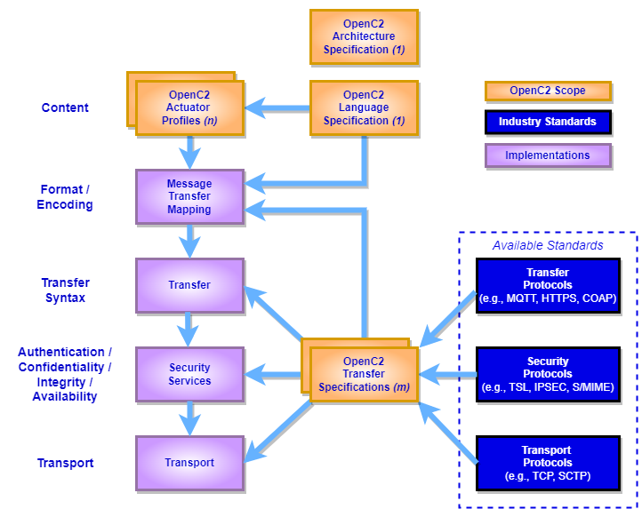

https://docs.oasis-open.org/openc2/oc2arch/v1.0/cs01/oc2arch-v1.0-cs01.md (Authoritative)
https://docs.oasis-open.org/openc2/oc2arch/v1.0/cs01/oc2arch-v1.0-cs01.html
https://docs.oasis-open.org/openc2/oc2arch/v1.0/cs01/oc2arch-v1.0-cs01.pdf
https://docs.oasis-open.org/openc2/oc2arch/v1.0/csd02/oc2arch-v1.0-csd02.md (Authoritative)
https://docs.oasis-open.org/openc2/oc2arch/v1.0/csd02/oc2arch-v1.0-csd02.html
https://docs.oasis-open.org/openc2/oc2arch/v1.0/csd02/oc2arch-v1.0-csd02.pdf
https://docs.oasis-open.org/openc2/oc2arch/v1.0/oc2arch-v1.0.md (Authoritative)
https://docs.oasis-open.org/openc2/oc2arch/v1.0/oc2arch-v1.0.html
https://docs.oasis-open.org/openc2/oc2arch/v1.0/oc2arch-v1.0.pdf
OASIS Open Command and Control (OpenC2) TC
Duncan Sparrell (duncan@sfractal.com), sFractal Consulting LLC
Michael Rosa (mjrosa@cyber.nsa.gov), National Security Agency
Duncan Sparrell (duncan@sfractal.com), sFractal Consulting LLC
This specification is related to:
Cyberattacks are increasingly sophisticated, less expensive to execute, dynamic and automated. The provision of cyber defense via statically configured products operating in isolation is untenable. Standardized interfaces, protocols and data models will facilitate the integration of the functional blocks within a system and between systems. Open Command and Control (OpenC2) is a concise and extensible language to enable machine-to-machine communications for purposes of command and control of cyber defense components, subsystems and/or systems in a manner that is agnostic of the underlying products, technologies, transport mechanisms or other aspects of the implementation.
This document describes the abstract architecture of OpenC2 to define a common understanding of the messages and interactions for all bindings and serializations.
This document was last revised or approved by the OASIS Open Command and Control (OpenC2) TC on the above date. The level of approval is also listed above. Check the "Latest stage" location noted above for possible later revisions of this document. Any other numbered Versions and other technical work produced by the Technical Committee (TC) are listed at https://www.oasis-open.org/committees/tc_home.php?wg_abbrev=openc2#technical.
TC members should send comments on this specification to the TC's email list. Others should send comments to the TC's public comment list, after subscribing to it by following the instructions at the "Send A Comment" button on the TC's web page at https://www.oasis-open.org/committees/openc2/.
This specification is provided under the Non-Assertion Mode of the OASIS IPR Policy, the mode chosen when the Technical Committee was established. For information on whether any patents have been disclosed that may be essential to implementing this specification, and any offers of patent licensing terms, please refer to the Intellectual Property Rights section of the TC's web page (https://www.oasis-open.org/committees/openc2/ipr.php).
Note that any machine-readable content (Computer Language Definitions) declared Normative for this Work Product is provided in separate plain text files. In the event of a discrepancy between any such plain text file and display content in the Work Product's prose narrative document(s), the content in the separate plain text file prevails.
The key words "MUST", "MUST NOT", "REQUIRED", "SHALL", "SHALL NOT", "SHOULD", "SHOULD NOT", "RECOMMENDED", "NOT RECOMMENDED", "MAY", and "OPTIONAL" in this document are to be interpreted as described in BCP 14 [RFC2119] and [RFC8174] when, and only when, they appear in all capitals, as shown here.
When referencing this specification the following citation format should be used:
[OpenC2-Arch-v1.0]
Open Command and Control (OpenC2) Architecture Specification Version 1.0. Edited by Duncan Sparrell. 30 September 2022. OASIS Committee Specification 01. https://docs.oasis-open.org/openc2/oc2arch/v1.0/cs01/oc2arch-v1.0-cs01.html. Latest stage: https://docs.oasis-open.org/openc2/oc2arch/v1.0/oc2arch-v1.0.html.
Copyright © OASIS Open 2022. All Rights Reserved.
Distributed under the terms of the OASIS IPR Policy.
The name "OASIS" is a trademark of OASIS, the owner and developer of this specification, and should be used only to refer to the organization and its official outputs.
For complete copyright information please see the full Notices section in Appendix G below.
The content in this section is non-normative, except where it is marked normative.
OpenC2 is a suite of specifications that enables command and control of cyber defense systems and components. OpenC2 typically uses a request-response paradigm where a Command is encoded by a Producer (managing application) and transferred to a Consumer (managed device or virtualized function) using a secure transfer protocol, and the Consumer can respond with status and any requested information.
OpenC2 allows the application producing the commands to discover the set of capabilities supported by the managed devices. These capabilities permit the managing application to adjust its behavior to take advantage of the features exposed by the managed device. The capability definitions can be easily extended in a noncentralized manner, allowing standard and non-standard capabilities to be defined with semantic and syntactic rigor.
OpenC2 is defined across a family of specifications of several types:
The OpenC2 Architecture Specification (this document) describes the fundamental structures of OpenC2 and provides a blueprint for developing Actuator Profiles and Transfer Specifications.
The OpenC2 Language Specification provides the semantics for the essential elements of the language, the structure for Commands and Responses, and the schema that defines the proper syntax for the language elements that represents the Command or Response. The Language Specification also defines the mechanisms for extending the OpenC2 language. [OpenC2-Lang-v1.0]
OpenC2 Actuator Profiles specify the subset of the OpenC2 language relevant in the context of specific actuator functions. Cyber defense components, devices, systems and/or instances may (in fact are likely to) implement multiple profiles. A profile refines the meaning of language elements (actions, targets, command arguments, results) used to perform the actuator function, and often defines additional elements that are relevant and/or unique to that function.
OpenC2 Transfer Specifications utilize existing protocols and standards to implement OpenC2 message transfer in specific environments. These standards are used for communications and security functions beyond the scope of the language, such as message transfer encoding, authentication, and end-to-end transport of OpenC2 Messages.
The OpenC2 language is described in the Language Specification using an abstract information model that does not specify any particular message encoding form (i.e., serialization). The most common encoding of OpenC2 messages is in JSON and the OpenC2 family of specifications presents examples in JSON format. Other encodings are permitted and are defined in their respective documents (e.g., a transfer specification). Similarly, OpenC2 messages can be conveyed using a variety of transfer mechanisms, using both point-to-point (e.g., HTTPS) and publish/subscribe (e.g., MQTT) communication models. The selection of message content encoding is determined by a combination of the environment where OpenC2 is being applied and the capabilities and limitations of the chosen transfer specification.
OpenC2 is developing a language for interoperating between functional elements of cyber defense systems. This language, used in conjunction with OpenC2 Actuator Profiles and OpenC2 Transfer Specifications, allows for vendor-agnostic cybertime response to attacks.
The Integrated Adaptive Cyber Defense (IACD) framework defines a collection of activities, based on the traditional OODA (Observe–Orient–Decide–Act) Loop [IACD]:
The goal of OpenC2 is to enable coordinated defense in cyber-relevant time between decoupled blocks that perform cyber defense functions. OpenC2 focuses on the Acting portion of the IACD framework; the assumption that underlies the design of OpenC2 is that the sensing/analytics have been provisioned and the decision to act has been made. This goal and these assumptions guide the design of OpenC2:
Technology Agnostic: The OpenC2 language defines a set of abstract atomic cyber defense actions in a platform- and implementation-agnostic manner
Concise: A Command is intended to convey only the essential information required to describe the action required and can be represented in a very compact form for communications-constrained environments
Abstract: Commands and Responses are defined abstractly and can be encoded and transferred via multiple schemes as dictated by the needs of different implementation environments
Extensible: While OpenC2 defines a core set of Actions and Targets for cyber defense, the language is expected to evolve with cyber defense technologies, and permits extensions to accommodate new cyber defense technologies.
The OpenC2 language assumes that the event has been detected, a decision to act has been made, the act is warranted, and the initiator and recipient of the Commands are authenticated and authorized. The OpenC2 language was designed to be agnostic of the other aspects of cyber defense implementations that realize these assumptions.
This section is normative.
Action: The task or activity to be performed (e.g., 'deny').
Actuator: The Consumer that executes the Command.
Actuator Profile: The document that defines a category of operations performed by an Actuator (e.g., 'Stateless Packet Filtering').
Argument: A property of a Command that provides additional information on how to perform the Command, such as date/time, periodicity, duration, etc.
Command: A Message defined by an Action-Target pair that is sent from a Producer and received by a Consumer.
Consumer: A managed device / application that receives Commands. Note that a single device / application can have both Consumer and Producer capabilities.
Message: A content- and transport-independent set of elements conveyed between Consumers and Producers.
Producer: A manager application that sends Commands.
Request: A Message from a Producer to a Consumer used to convey a Command.
Response: A Message from a Consumer to a Producer acknowledging a Command or returning the requested resources or status to a previously received Command.
Specifier: A property or field that identifies a Target to some level of precision.
Target: The object of the Action, i.e., the Action is performed on the Target (e.g., IP Address).
| Acronym | Description |
|---|---|
| API | Application Programming Interface |
| AP | Actuator Profile |
| ASCII | American Standard Code for Information Interchange |
| BCP | Best Current Practice |
| CBOR | Concise Binary Object Representation |
| CIDR | Classless Inter-Domain Routing |
| CoAP | Constrained Application Protocol |
| COSE | CBOR Object Signing and Encryption |
| DOI | Digital Object Identifier |
| ER | Endpoint Response |
| EUI | Extended Unique Identifier |
| HTTP | Hyper Text Transfer Protocol |
| HTTPS | Hyper Text Transfer Protocol Secure |
| IACD | Integrated Adaptive Cyber Defense |
| IANA | Internet Assigned Numbers Authority |
| ICMP | Internet Control Message Protocol |
| ID | Identifier |
| IP | Internet Protocol |
| IoT | Internet of Things |
| IPR | Intellectual Property Rights |
| JOSE | JSON Object Signing and Encryption |
| JSON | JavaScript Object Notation |
| LS | Language Specification |
| MAC | Media Access Control |
| MQTT | Message Queuing Telemetry Transfer |
| OASIS | Organization for the Advancement of Structured Information Standards |
| OODA | Observe-Orient-Decide-Act |
| OOBM | Out-of-Band Management |
| OpenC2 | Open Command and Control |
| OpenDXL | Open Data eXchange Layer |
| Portable Document Format | |
| RFC | Request for Comment |
| SCTP | Stream Control Transmission Protocol |
| SHA | Secure Hash Algorithms |
| SLPF | StateLess Packet Filtering |
| STD | Standard |
| TC | Technical Committee |
| TCP | Transmission Control Protocol |
| UDP | User Datagram Protocol |
| UML | Unified Modeling Language |
| URI | Uniform Resource Identifier |
| UTC | Coordinated Universal Time |
| UUID | Universally Unique IDentifier |
| VLAN | Virtual Local Area Network |
| XML | eXtensible Markup Language |
OpenC2 is a suite of specifications for Producers and Consumers to command and execute cyber defense functions. These specifications include the OpenC2 Language Specification, Actuator Profiles (APs), and Transfer Specifications. The OpenC2 Language Specification and Actuator Profile specifications focus on the language content and meaning at the Producer and Consumer level of Command and Response while the transfer specifications focus on the protocols for their exchange. The language is defined abstractly in the Language Specification, permitting flexibility of message serialization and transfer protocol choices when implementing OpenC2. Interoperability between specific OpenC2 implementations is dependent on the selection of common serialization and transfer mechanisms.
In general, there are two types of participants involved in the exchange of OpenC2 Messages, as depicted in Figure 2-1:
Figure 2-1. OpenC2 Message Exchange

The Language Specification defines two distinct content types (i.e., payload structures): Command and Response. The following example, drawn from the AP for Stateless Packet Filtering [SLPF], illustrates the general structure of OpenC2 Command and Response message payloads, using the common JSON serialization. The example action permits ftp data transfers to 3ffe:1900:4545:3::f8ff:fe21:67cf from any source.
Command:
{
"action": "allow",
"target": {
"ipv6_connection": {
"protocol": "tcp",
"dst_addr": "3ffe:1900:4545:3::f8ff:fe21:67cf",
"src_port": 21
}
},
"actuator": {
"slpf": {}
}
}In this case the Actuator returns a rule number associated with the allowed interaction.
Response:
Command: An instruction from one system, known as the Producer, to one or more systems, the Consumer(s), to act on the content of the Command.
The Command describes an Action to be performed on a Target and may include information identifying the Actuator or Actuators that are to execute the Command. A Command can also contain an optional Command identifier, if necessary. The following list summarizes the main four components of a Command.
The Action and Target components are required. A particular Target may be further refined by the Target type. The Language Specification defines procedures to extend the set of OpenC2 Targets.
Command Arguments, if present, influence the Command by providing information such as timing, periodicity, duration, or other details on what is to be executed. They can also be used to convey the need for acknowledgment or additional status information about the execution of a Command.
The Profile field, if present, specifies the profile that defines the function to be performed. A Consumer executes the command if it supports the specified profile, otherwise the command is ignored. The Profile field may be omitted and typically will not be included in implementations where the functions of the recipients are unambiguous or when a high-level effects-based command is desired and tactical decisions on how the effect is achieved is left to the recipient. If Profile is omitted and the recipient supports multiple profiles, the command will be executed in the context of each profile that supports the command's combination of action and target.
Response: Any information sent back to the Producer as a result of the Command.
The Response is sent from a Consumer, usually back to the Producer, and is a means to provide information (such as acknowledgment, status, etc.) regarding the results of executing a Command. At a minimum, a Response will contain a status code to indicate the result of performing the Command. Additional status text and response fields optionally provide more detailed information that is specific to or requested by the Command.
This section describes a number of OpenC2 concepts related to creating working systems using OpenC2 specifications.
This section discusses four representative configurations for an OpenC2 Consumer device:
The Consumer implements a single function, and therefore supports a Actuator Profile (AP).
The Consumer implements multiple functions, and therefore supports multiple APs, which may be all different, all the same, or a mixture.
The Consumer is a manager for a collection of devices, providing an indirect means for the Producer to use OpenC2 Commands to influence the operations of those devices. The managed devices in the collection may or may not be identical, and the interface to them is not assumed to use OpenC2.
The Consumer is a manager for a collection of devices that are managed using OpenC2, making the device a combined Consumer / Producer.
In all of these configurations, "device" is a collective term for the processing element that is the OpenC2 Consumer. A device could be a physical or virtual entity in any number of computing environments. The essential characteristics are that it is a network-accessible, addressable entity that operates as an OpenC2 Consumer.
In configurations 1 and 2, the Producer has direct, explicit knowledge of the APs implemented by the Consumer. OpenC2 Commands issued by the Producer directly affect the operation of the Consumer device.
In configurations 3 and 4, the Producer has knowledge of the capabilities supported by the Consumer manager, but only indirectly affect the operation of the managed devices. In configuration 3 there is no assumption that the interface between the Consumer manager and the managed devices uses OpenC2 Commands and Responses, whereas in configuration 4 that interface is explictly OpenC2-based. Implementations with a mixture of OpenC2- and non-OpenC2-based interactions with the managed devices are also possible.
Figure 2-2 illustrates the situation with a Producer commanding an OpenC2 Consumer that implements a single cybersecurity function, and its corresponding AP.
Figure 2-2. Single Function Device 
Figure 2-3 illustrates the situation with a Producer commanding an OpenC2 Consumer that implements multiple cybersecurity functions, and their corresponding APs. The cybersecurity functions may be all different, all the same, or a mixture. An example of different functions could be an end-user computer system with anti-virus (AV), endpoint response (ER) and packet filtering (PF) capabilities. An example of multiple instances of the same AP in configuration 2 would be packet filtering functions on multiple, distinct network interfaces.
Figure 2-3. Multiple Function Device 
Figure 2-4 illustrates the situation where the Consumer fronts a set of managed devices implementing cybersecurity functions. The managed devices may implement any mixture of cybersecurity functions, and the Actuator Manager's interface to those devices is not using OpenC2.
Figure 2-4. Actuator Manager Device 
Figure 2-5 illustrates the situation where the Consumer fronts a set of managed devices implementing cybersecurity functions. The managed devices may implement any mixture of cybersecurity functions, but in this case the Manager's interface to those devices explicitly does use OpenC2, making the device an intermediate, combined Consumer / Producer.
Figure 2-5. Actuator Manager Device Using OpenC2 
The OpenC2 Language Specification defines a standard set of actions and a baseline collection of targets for those actions. An action-target pair defines a command, as described in Section 2.1.
The available set of actions for creating OpenC2 commands is limited to those defined in the Language Specification in order to encourage commonality and interoperability of implementations. The function of each action is defined in the Language Specification, and the set of actions can only be expanded by modifying the Language Specification. Specifically, the set of OpenC2 actions cannot be expanded by defining new actions in an Actuator Profile.
In contrast the baseline set of targets in the Language Specification is a usable set, but is also explicitly extensible. This recognizes the diversity of cybersecurity functions and the corresponding need for function-specific targets beyond the general purpose set provided in the Language Specification.
There are other automation capabilities (e.g, Microsoft Powershell) that implement a verb-noun model similar to that used by OpenC2. Future expansions to the OpenC2 action set should take advantage of prior work from similar capabilities in selecting names for actions. This will encourage commonality of usage and understanding of verbs in automation systems.
A common situation in OpenC2 interactions is the need for a Producer to determine the capabilities of a Consumer in order to scope the range of commands that can usefully be sent to that Consumer. The approach is demonstrated in the Language Specification's provision of the "query" : "features" and "query" : "properties" commands. This "introspection" capability, defined for OpenC2 as the ability of a Consumer to inform a Producer of the Consumer's capabilities, enables a degree of flexible self-configuration of the interactions between Producers and Consumers.
Any situation where a Consumer may potentially provide a range of responses to a Producer's command is a candidate to apply the introspection technique. For example, where a Consumer may return a response in any of several data formats or serializations, it is appropriate to consider a two-stage interaction:
Stage 1: the Producer identifies the information of interest and queries regarding the Consumer's capabilities to provide that information. The Consumer responds with a list, possibly prioritized, of the ways it can supply the required information.
Stage 2: the Producer selects from among the options provided by the Consumer and sends a Command specifying the desired packaging of the information. The Consumer responds with the required information packaged as specified.
The information provided by the Consumer in stage 1 enables the Producer to proceed with confidence about the outcome of the interaction in stage 2.
OpenC2 implementations integrate the OpenC2 specifications described above with related industry specifications, protocols, and standards. Figure 2-3 depicts the relationships among the family of OpenC2 specifications, and their relationships to other industry standards and environment-specific implementations of OpenC2. Note that the layering of implementation aspects in the diagram is notional, and not intended to preclude any particular approach to implementing the needed functionality (for example, the use of an application-layer message signature function to provide message source authentication and integrity).
Figure 2-3. OpenC2 Documentation and Layering Model 
OpenC2 is conceptually partitioned into four layers as described in Table 2-1.
Table 2-1. OpenC2 Protocol Layers
| Layer | Examples |
|---|---|
| Function-Specific Content | Actuator Profiles (OpenC2-SLPF-v1.0, ...) |
| Common Content | Language Specification |
| Message | Transfer Specifications (OpenC2-HTTPS-v1.0, OpenC2-MQTT-v1.0, ...) |
| Secure Transport | HTTPS, CoAP, MQTT, OpenDXL, ... |
OpenC2 is intended to be integrated into different systems which will provide a variety of security services. Appendix B describes the possible threats that could affect OpenC2 operations and the security services needed to protect those operations against such threats. Because the implementation of these services are beyond the scope of this specification, the review in Appendix B is for reference purposes and to emphasize the importance of considering security services in the creation of OpenC2 implementations.
This section defines the conformance requirements for OpenC2 implementations.
An OpenC2 Producer is defined per Section 2 of this document.
An OpenC2 Consumer is defined per Section 2 of this document.
The OpenC2 Transfer Specification List is defined as:
The OpenC2 Actuator Profile Specification List is defined as:
The Actuator Profile List is defined as the list of Actuator Profiles supported by the Consumer as supplied in the response to the command:
{action:query, target:features, target-specifier:[profiles]}
as per Section 4.1 of the Language Specification.
A Consumer's Actuator Profile List is composed of two types of profiles:
CC 3.2.1 In order to conform to this specification, an OpenC2 Producer MUST only issue OpenC2 commands conforming to OpenC2 Language Specification Section 5.1 Conformance Clause 1.
CC 3.2.2 In order to conform to this specification, an OpenC2 Producer MUST only accept responses conforming to OpenC2 Language Specification Section 5.2 Conformance Clause 2.
CC 3.2.3 In order to conform to this specification, an OpenC2 Producer MUST be conformant to OpenC2 Language Specification Section 5.3 Conformance Clause 3.
CC 3.2.4 In order to conform to this specification, an OpenC2 Producer MUST be conformant with at least one transfer specification in the OpenC2 Transfer Specification List.
CC 3.3.1 In order to conform to this specification, an OpenC2 Consumer MUST only accept OpenC2 commands conforming to OpenC2 Language Specification Section 5.1 Conformance Clause 1.
CC 3.3.2 In order to conform to this specification, an OpenC2 Consumer MUST only return responses conforming to OpenC2 Language Specification Section 5.2 Conformance Clause 2.
CC 3.3.3 In order to conform to this specification, an OpenC2 Consumer MUST be conformant to OpenC2 Language Specification Section 5.4 Conformance Clause 4.
CC 3.3.4 In order to conform to this specification, an OpenC2 Consumer MUST be conformant with at least one transfer specification in the OpenC2 Transfer Specification List.
CC 3.3.5 In order to conform to this specification, an OpenC2 Consumer MUST have an OpenC2 Consumer Actuator Profile List with at least one entry.
CC 3.3.6 In order to conform to this specification, all SAP entries on a Consumer's OpenC2 Consumer Actuator Profile List MUST conform to the corresponding OASIS OpenC2 Actuator Profiles.
CC 3.4.1 In order to conform to this specification, a CAP MUST extend the functionality covered by a profile on the OpenC2 Actuator Profile Specification List, and MUST conform with the OpenC2 Actuator Profile Specification being extended.
For example, if a CAP extends the slpf functionality, the Consumer must conform to the OASIS OpenC2 SLPF Actuator Profile Specification. Note if the actuator function is not an extension to an existing function specified in a published AP, the Consumer implementation fails this conformance clause. For example, a CAP fails this clause if it is for malware detection, and there is not a malware detection SAP.
CC 3.4.2 In order to conform to this specification, all CAP entries MUST extend the functionality of a SAP in a manner consistent with the OpenC2 Language Specification section 3.1.4 requirements for extensions.
This appendix contains the normative and informative references that are used in this document.
While any hyperlinks included in this appendix were valid at the time of publication, OASIS cannot guarantee their long-term validity.
The following documents are referenced in such a way that some or all of their content constitutes requirements of this document.
Open Command and Control (OpenC2) Language Specification Version 1.0. Edited by Jason Romano and Duncan Sparrell. Latest stage: https://docs.oasis-open.org/openc2/oc2ls/v1.0/oc2ls-v1.0.html
Specification for Transfer of OpenC2 Messages via HTTPS Version 1.1. Edited by David Lemire. Latest stage: https://docs.oasis-open.org/openc2/open-impl-https/v1.1/open-impl-https-v1.1.html
Specification for Transfer of OpenC2 Messages via MQTT Version 1.0. Edited by David Lemire. Latest stage: https://docs.oasis-open.org/openc2/transf-mqtt/v1.0/transf-mqtt-v1.0.html
Open Command and Control (OpenC2) Profile for Stateless Packet Filtering Version 1.0. Edited by Joe Brule, Duncan Sparrell, and Alex Everett. Latest stage: https://docs.oasis-open.org/openc2/oc2slpf/v1.0/oc2slpf-v1.0.html
Bradner, S., "Key words for use in RFCs to Indicate Requirement Levels", BCP 14, RFC 2119, DOI 10.17487/RFC2119, March 1997, http://www.rfc-editor.org/info/rfc2119.
Leiba, B., "Ambiguity of Uppercase vs Lowercase in RFC 2119 Key Words", BCP 14, RFC 8174, DOI 10.17487/RFC8174, May 2017, http://www.rfc-editor.org/info/rfc8174.
M. J. Herring, K. D. Willett, "Active Cyber Defense: A Vision for Real-Time Cyber Defense," Journal of Information Warfare, vol. 13, Issue 2, p. 80, April 2014.https://www.semanticscholar.org/paper/Active-Cyber-Defense-%3A-A-Vision-for-Real-Time-Cyber-Herring-Willett/7c128468ae42584f282578b86439dbe9e8c904a8.
Willett, Keith D., "Integrated Adaptive Cyberspace Defense: Secure Orchestration", International Command and Control Research and Technology Symposium, June 2015 https://www.semanticscholar.org/paper/Integrated-Adaptive-Cyberspace-Defense-%3A-Secure-by-Willett/a22881b8a046e7eab11acf647d530c2a3b03b762.
Rescorla, E. and B. Korver, "Guidelines for Writing RFC Text on Security Considerations", BCP 72, RFC 3552, DOI 10.17487/RFC3552, July 2003, https://www.rfc-editor.org/info/rfc3552.
Jones, M., Bradley, J., and N. Sakimura, "JSON Web Signature (JWS)", RFC 7515, DOI 10.17487/RFC7515, May 2015, https://www.rfc-editor.org/info/rfc7515.
Jones, M. and J. Hildebrand, "JSON Web Encryption (JWE)", RFC 7516, DOI 10.17487/RFC7516, May 2015, https://www.rfc-editor.org/info/rfc7516.
Schaad, J., "CBOR Object Signing and Encryption (COSE)", RFC 8152, DOI 10.17487/RFC8152, July 2017, https://www.rfc-editor.org/info/rfc8152.
This appendix discusses security concerns related to OpenC2.
Cyber defense systems are high-value targets for an attacker since disabling detection and response capabilities opens the door to allow further attacks. There would be great value to an attacker to turn off the sensors, breach the defenses, disable responsive actions, and potentially use the cyber defense tools to attack the network.
There are two threat target areas to address when considering the security of OpenC2:
By providing the C2 for time-critical response actions OpenC2 is an enabler of improved cyber defense capabilities for user networks and systems. However, to the extent that OpenC2 traffic and processing share resources with those user networks and systems, those same threats (and mitigations) will also be applicable to OpenC2. Even if the OpenC2 traffic is segregated using logical or cryptographic separation, the underlying physical resources may still be subject to common attacks (and other threats) that will affect OpenC2 operations.
The threats, attacks, vulnerabilities, and impacts to a given OpenC2 implementation should be analyzed with a focus on the goals of the attacker and the resulting impacts since these will be different from a standard user analysis. Four categories of threat sources should be addressed:
Malicious Adversaries (external or insider) – the primary source of concern for the security of OpenC2 operations
Non-malicious Users – mistakes by users, especially privileged users, can cause major lapses in cyber defense
Structural Threats – failures of hardware and/or software can affect network and system integrity or availability, and impede the ability of OpenC2 mechanisms to operate
Environmental Threats – disasters and infrastructure failures may need to addressed and accommodated depending on the mission needs of the defended networks
Malicious adversaries may use any form of attack, these are some primary examples.
Passive Attacks – An attacker may monitor traffic at levels of sophistication and access ranging from simple traffic analysis (is there a change in the volume of OpenC2 traffic?) to eavesdropping on the contents of the messages (if unencrypted) to see what was detected, what actions are being taken, and the specific targets of OpenC2 commands. This information will let the attacker know if their active attacks have been detected and how the system responds. Their active attacks can then be revised to avoid detection or to trigger a known response. In the latter case, the attacker could use knowledge of the response strategy to cause the system to unnecessarily deny services to users.
Active Attacks, Externally Initiated – An attacker may try to manipulate OpenC2 traffic by deleting, delaying, or replaying legitimate messages. They may also attempt to modify the contents of a message or masquerade as an OpenC2 Producer and issue bogus messages. Finally, an external attacker might be able to compromise a legitimate OpenC2 Producer within an environment; protection of an OpenC2 Producer should be a priority in any implementation of OpenC2. If any of these attacks succeed, the attacker can disrupt or disable responses to other attacks and can cause the defensive capabilities to impede legitimate operations. Successfully subverting defenses can allow more intrusive attacks.
Insider Attacks (Malicious users) – An insider, especially a privileged user, may be able to more effectively perform any of the passive and active attacks already mentioned plus can act as a legitimate user to perform other actions. These actions could include misconfiguring devices, changing policy rules, issuing malicious commands from authorized sources, and even turning systems off.
Supply Chain or Distribution Attacks - A vendor, transporter, developer, or installer may modify the software or hardware used for OpenC2-based functions. The modification may introduce an exploitable vulnerability, disable a critical function, or cause failure under specific conditions. Even if the attack is just substitution of a counterfeit component, the behavior may be different and cause problems.
This section reviews the applicability of traditional security services to OpenC2 operations. As OpenC2 specifies a language (as opposed to a protocol or a system) that is subject to a range of implementations, in a variety of environments, using a variety of transfer protocols, data encodings, etc., this discussion does not specify any particular mechanisms to implement these security services.
Implementations of OpenC2 should apply well-vetted and widely-used industry standard mechanisms (e.g., as specified by Internet Engineering Task Force [IETF] Requests for Comment [RFCs]) compatible with other implementation choices to provide security services. For example:
JSON-encoded messages could be protected using the techniques described in the JSON Object Signing and Encryption (JOSE) family of RFCs, specifically [RFC7515], [RFC7516], and associated documents.
CBOR-encoded messages could be protected using the techniques described in the CBOR Object Signing and Encryption (COSE) family of RFCs, specifically [RFC8152] and associated documents.
Confidentiality of OpenC2 message content prevents attackers from seeing the response actions that result from attacker activities. This knowledge could aid an attacker in manipulating or circumventing cyber defenses.
Both data and system integrity need to be addressed in OpenC2 implementations. Data integrity is extremely important - the contents of a C2 message should not be modifiable without detection. Replay and re-sequencing attacks also need to be addressed. Message integrity must always be paired with source authentication. System integrity including software/application integrity is also critical to OpenC2 security. If a system, including system and application software, is not in a compliant, stable configuration then its actions cannot be trusted.
Availability in the context of OpenC2 is focused on the ability of Producers to send commands to Consumers, and the corresponding ability of Consumers to receive, execute, and send Responses to those commands. Assuring availability can be very difficult if the OpenC2 message traffic is carried in-band with the user traffic. Out-of-band management networks should be used where possible as they provide isolation of OpenC2 activities from attacks against operational user networks and can be engineered to provide better support for high availability. Also, approaches to addressing intermittent connectivity and actions upon reconnection should be addressed.
OpenC2 is envisioned for application in environments where C2 will be automated as much as possible. In the consequent machine-to-machine exchanges, the systems involved need to securely authenticate that authorized systems are involved and not rogue entities. In particular, actuators receiving and executing OpenC2 commands must be able to confirm those commands came from a source that can confidently be authenticated. With the increasing number of Internet-enabled devices, reliable machine authentication is crucial to allow secure communication in automated network environments. In any architecture deployment, consider the appropriate levels and types of authentication for managers and actuators.
There are also aspects of identity and credential management that need to be addressed: uniqueness of name space, identification of device type and instance, provisioning of credentials (typically digital certificates), means to verify trust chain and current status of credentials, means to revoke credentials, and session management. There are many challenges to find the right authentication model that can support a machine-to-machine communication method depending on the range of device and network capabilities in the operating environment.
Coupled with user or device authentication, a requesting entity must have authorization before tasks are executed on its direction. Authorization is the process of enforcing policies: determining what types of actions on a resource or service are permitted for this Producer. Once a Producer has been authenticated, they may be authorized for different types of actions depending on the policy assigned. The authorization should be role- or attribute-based to avoid the problems of maintaining an identity-based access control list.
The policy rules may include conditional aspects such as time of day or operational status of network to prevent actions from adversely affecting missions. In these cases, it is important to determine if the Producer has knowledge of the conditions and can self-impose the policy rules or whether the policy needs to be enforced at (or near) the resource.
Authentication is also the basis for associating the Producer with the commands sent, the authorization decision (allow or deny), and the actions taken. The authenticated identity of the actor along with the action is captured in the audit logs and provides traceability to the responsible party.
Non-repudiation may be required if there is a requirement to formally prove the issuance or receipt of a C2 message, however any non-repudiation requirement should be evaluated critically due to impacts on the processing, availability and delays of automated cyber defense actions. This level of security may not be required in a closed system where source authentication and logged receipt events are sufficient evidence of who sent and who received messages. Non-repudiation implementations may require a third party acting as a notary or signature-based message authentication resulting in additional costs in terms of processing, communications, and invoking third-party services for the commands and responses. A time stamping service will typically also be required. The third party would timestamp OpenC2 messages and certify proof of issuance and delivery. This will add dependencies and overhead to the system.
Audit trails are necessary in any secure system but have specific considerations in machine-to-machine communications. In conjunction with appropriate tools and procedures, audit trails can provide a means to help accomplish several security-related objectives, including individual accountability, reconstruction of events, intrusion detection, and problem identification. Typical events include:
Actions and the results that are invoked using OpenC2 should be recorded and analyzed for security areas such as forensics, secure implementation, security architecture of impact changes within the environment, and completion of such tasks. This type of auditing provides the essential ingredients for early detection of actions that violate security policy.
Collecting metrics will be necessary for a multitude of activities to assess performance and improve effectiveness of actions within an OpenC2 environment. Implementations should provide the ability to measure resources a user or system component (e.g., sensors and actuators) consumes. This could include the amount of system time or quantity of messages it has sent or received during a session. This can be accomplished by logging of session statistics and usage information and is used for trend analysis, resource utilization, performance assessment, and capacity planning. Overall all of these are important data captures to improve the configuration and deployment of OpenC2 components and a verification that operations are working as intended.
The available networking architecture, topology, and technology all have implications for, and may also be constrained by, OpenC2 use and security. The topology and communications modes supporting OpenC2 traffic will affect the ability and approaches to achieving robustness, providing redundancy, and meeting responsiveness goals. Ideally, OpenC2 traffic should be quickly and reliably delivered to all intended recipients with some guarantee or confirmation of both delivery and action taken. It will not always be possible to achieve these goals due to constraints of available or legacy networking and systems, mobility/connectedness of devices, effects of attacks or outages in the network, and management/cost factors.
If OpenC2 traffic is carried in-band with user and other traffic, then it is subject to the same threats (plus the threats against cyber defense C2) and will leverage the same defenses as the other traffic. Besides being subject to the same external threats as the other traffic, the implementer also needs to consider:
Resource contention issues: C2 traffic may be delayed or blocked by high volumes of user traffic or reductions in network capacity or connectivity
Intended cyber defense actions: The same blocking or filtering of traffic meant to stop an external attacker may affect C2 traffic flow as well (e.g., external monitoring feeds could be cut off)
Targeted attacks against cyber defense C2: The attacker may specifically attempt to single out C2 traffic for intercept, modification, denial of service, or other attack
Out-of-Band management (OOBM) involves the use of a dedicated channel for managing network devices. OOBM allows the network operator to establish trust boundaries around accessing the management function to apply it to network resources. Depending on the specific implementation, OOBM also can be used to ensure management connectivity (including the ability to determine the status of any network component) independent of the status of in-band network components. OOBM is a common best practice with renewed focus based on the evolving threat landscape. There are a range of potential implementations of OOBM, from an entirely physically-separated network to approaches that apply logical separation (e.g., virtual LANs [VLAN]) on the network backbone to separate management traffic from ordinary user traffic.
C2 systems are prime objectives of adversaries and OOBM can provide another layer in the defense-in-depth model. The effectiveness of this layering or separation depends on how OOBM is implemented and secured. There should be a much lower attack surface since general users would not have access to this channel. Also security policies, generally, will restrict or prohibit connection to the OOBM through access control lists or other access methods. In practice though, implementations may have prioritized administrator access (including remote access) and chosen weaker security. For example, implementers may have left back-door access in place so that disastrous failures can rapidly be fixed. To address these types of issues, a security plan should be implemented and enforced, focusing in these areas, which will enhance the entire security architecture of the enterprise:
Assistance with this document from the following individuals are gratefully acknowledged:
The following individuals have participated in the creation of this specification and are gratefully acknowledged:
OpenC2 TC Members:
| First Name | Last Name | Company |
|---|---|---|
| David | Bizeul | SEKOIA |
| Marco | Caselli | Siemens AG |
| Toby | Considine | University of North Carolina at Chapel Hill |
| Martin | Evandt | University of Oslo |
| Alex | Everett | University of North Carolina at Chapel Hill |
| Jane | Ginn | Cyber Threat Intelligence Network, Inc. |
| John-Mark | Gurney | Copado |
| Christian | Hunt | Copado |
| Dan | Johnson | sFractal |
| David | Kemp | National Security Agency |
| David | Lemire | National Security Agency |
| Patrick | Maroney | AT&T |
| Vasileios | Mavroeidis | University of Oslo |
| Dmitri | Raidman | Cybeats |
| Christopher | Robinson | Cyber Threat Intelligence Network, Inc. |
| Michael | Rosa | National Security Agency |
| Duane | Skeen | Northrup Grumman |
| Duncan | Sparrell | sFractal |
| Gerald | Stueve | Fornetix |
| Drew | Varner | NineFX, Inc. |
| Russ | Warren | IBM |
Italics indicates former TC members.
| Revision | Date | Editor | Changes Made |
|---|---|---|---|
| oc2arch-v1.0-csprd01.md | 2021-12-21 | Duncan Sparrell | WD01: Capture initial content prior to reorganization |
| oc2arch-v1.0-wd01.md | 2021-12-21 | Duncan Sparrell | WD02: Capture new starter document prior to adding reorganized content |
| oc2arch-v1.0.md | 2022-01-19 | Duncan Sparrell | WD03: Capture reorganized content |
| oc2arch-v1.0-wd04.md | 2022-05-04 | Duncan Sparrell | WD04: Nearly complete draft |
| oc2arch-v1.0-wd05.md | 2022-05-12 | Duncan Sparrell | WD05: Minor updates for clarity & readability, presented for CSD approval |
| oc2arch-v1.0-wd06.md | 2022-07-13 | Duncan Sparrell | WD06: Updated conformance section, added example message exchange, editorial fixes |
| oc2arch-v1.0-wd07.md | 2022-09-14 | Duncan Sparrell | ARCH-101: editorial fixes |
| oc2arch-v1.0-wd07.md | 2022-09-14 | Duncan Sparrell | ARCH-102: clarify LS authority on Actions in 2.3.2 |
| oc2arch-v1.0-wd07.md | 2022-09-14 | Duncan Sparrell | Arch-103: recommend standards-based approach to security services |
| oc2arch-v1.0-wd07.md | 2022-09-14 | Duncan Sparrell | Arch-104: add Producer takeover to B.2.3 |
| oc2arch-v1.0-wd07.md | 2022-09-14 | Duncan Sparrell | ARCH-105: improve OOBM discussion in B.4.2 |
| oc2arch-v1.0-wd07.md | 2022-09-14 | Duncan Sparrell | WD06: Updates to align with "actuator" to "profile" change in Language Specification (forthcoming v2.0) |
This example illustrates the application of the various types of OpenC2 specifications. Figure E-1 shows a simple operating environment with five components:
A Security Orchestration, Automation, and Response (SOAR) system that is the OpenC2 Producer in the environment, directing the operation of OpenC2-enabled cyber defense functions.
A Publish / Subscribe message broker to support communications among the other components.
Three OpenC2 Consumers:

The diagram also shows a collection of OpenC2 specifications, and tags the components with the specifications relevant to their participation in OpenC2 exchanges:
Colored circles on each of the components identify which specifications are relevant to that component:
The message broker needs to conform to the publish / subscribe protocol called out in the Transfer Specification, but does not have any OpenC2-specific requirements.
Messaging is defined by a combination of information from the Language Specification and the Transfer Specification, indicated by a bi-colored (red/blue) bubble. This function is relevant to all of the OpenC2 components.
All IP-connected camera must support the SBOM Retrieval AP.
The laptop (Endpoint Consumer) must support the SBOM Retrieval AP and the Endpoint Respose AP.
The firewall (Infrastructure Consumer) must support the SBOM Retrieval AP and the Packet Filtering AP.
This example provides an overview of the typical structure and content of an OpenC2 Acuator Profile.
This section provides a brief overview of the cyber defense function addressed in this AP.
This section defines the set of Actions, Targets, Arguments, and Actuator Specifiers that are meaningful in the context of PF and the appropriate status codes, status texts, and other properties of a Response message. This section is also where any AP-specific extentions to the language are defined.
This section identifies the OpenC2 Actions, Targets, Arguments, and Target and Actuator Specifiers needed for this AP. Depending on the needs of the AP, extended targets, arguments, and specifiers can be defined in this section.
This section defines common and unique responses neede for this AP, and the response status codes that are applicable.
This section defines the commands (i.e., Action / Target pairs) used for the control of the cyber defense function. A matrix is used to identify the valid pairs:
| action 1 | action 2 | action 3 | action 4 | |
|---|---|---|---|---|
| target A | valid | |||
| target B | valid | valid | ||
| target C | valid | valid |
A second table links the valid commands to the available arguments, and links to the subsequent section where this command is discussed in detail.
| command 1 | command 2 | command 3 | command 4 | command 5 | |
|---|---|---|---|---|---|
| argument 1 | section a.b.c | section a.b.e | |||
| argument 2 | section a.b.c | section a.b.d | |||
| argument 3 | section a.b.c | section a.b.f | section a.b.g |
Subsequent subsections provide needed details about each command and its relevant arguments.
This section provides the conformance clauses required in an OASIS specification. Clauses are grouped into those applicable to Producers using this AP to generate commands and those applicable to Consumers receiving and executing those commands.
Examples of commands and responses that illustrate the use of this AP will be found in Appendix E.
This example provides an overview of the typical structure and content of an OpenC2 Transfer Specification.
This section provides a brief introduction to the transfer protocol that is the focus of this transfer specification.
This section provides an overview of the approach employed to use the transfer protocols in support of OpenC2 messaging. A description of how OpenC2 messages are packaged for transfer in the protocol is needed. Other content of the section is flexible based on the characteristics of the protocol in use. For example, a subsection of 2.0 would describe the topic structure used in a publish / subscribe environment, or which protocol features are used in a specific way for OpenC2 messaging.
This section defines specific requirements to use the transfer protocol to implement the operating model, and provides details as needed to apply the standard that describe the protocol. Similar to section 2, the structure of this ection if flexible based on the characteristics of the protocol in use.
This section provides the conformance clauses required in an OASIS specification. Clauses may or may not be grouped into those applicable to Producers and those applicable to Consumers receiving and executing those commands, depending on the nature of the protocol in use.
Examples of message transfer that illustrate the use of this transfer specifcation will be found in Appendix E.
A namespace is a set of names used to identify objects. A namespace ensures that all of a given set of objects can be easily identified and unambiguously referenced.
All OpenC2 type definitions are contained in a specification, and each specification is assigned a globally-unique namespace in the form of a URI. Types in one specification can reference types defined in another specification using a namespaced name:
name = <namespace identifier> separator <local name>
The XML standard includes namespaces but JSON does not. Because OpenC2 consists of multiple specifications, it requires a namespacing mechanism usable with JSON data. OpenC2 has therefore created a naming approach similar to XML's that can be applied to non-namespaced data formats such as JSON. For brevity the approach assigns a short Namespace Identifier (NSID) to each referenced namespace using an import statement, then uses the NSID as a prefix to each referenced type:
schema:
import: {"ex": "http://www.example.com/datatypes/v1.2"}
Person = Record
1 name String
2 id Integer
3 email ex:Email-Address // type definition imported/resolved from another specification
JSON data:
{"name": "John", "id": 12345, "email": "john@acme.com"}
Namespacing thus involves four different values:
This approach uses a resolver to look up all namespaced type definitions from their defining specifications and incorporates them into a single schema. Authors can manually copy and paste definitions into a monolithic specification, but namespace resolution automates that process, eliminating redundancy and the potential for inconsistency.
A namespace URI is only an identifier. For syntactic reasons it must have a scheme (http) but it is not a network-accessible resource. Referenced specifications do not need to be available online and implementations are not required to do namespace resolution at runtime, although dynamic namespace resolution may be appropriate for some use cases. URLs for online schemas should be derived from the namespace using scheme "https", filename "schema", and the applicable file extension: ".jadn" for the abstract schema, and ".json", ".xsd", ".cddl", ".proto", etc. for corresponding concrete schemas.
OpenC2 TC work product names and shorthands are coordinated with OASIS TC Administration during initial work product definition. Namespace URIs are based on the shorthands from this coordination, omitting the filename and the "docs" domain component, and using "http" as the scheme component.
Custom actuator profile namespaces are chosen by the profile author and should be chosen to avoid conflict with namespace URIs registered here.
Copyright © OASIS Open 2022. All Rights Reserved.
All capitalized terms in the following text have the meanings assigned to them in the OASIS Intellectual Property Rights Policy (the "OASIS IPR Policy"). The full Policy may be found at the OASIS website.
This document and translations of it may be copied and furnished to others, and derivative works that comment on or otherwise explain it or assist in its implementation may be prepared, copied, published, and distributed, in whole or in part, without restriction of any kind, provided that the above copyright notice and this section are included on all such copies and derivative works. However, this document itself may not be modified in any way, including by removing the copyright notice or references to OASIS, except as needed for the purpose of developing any document or deliverable produced by an OASIS Technical Committee (in which case the rules applicable to copyrights, as set forth in the OASIS IPR Policy, must be followed) or as required to translate it into languages other than English.
The limited permissions granted above are perpetual and will not be revoked by OASIS or its successors or assigns.
This document and the information contained herein is provided on an "AS IS" basis and OASIS DISCLAIMS ALL WARRANTIES, EXPRESS OR IMPLIED, INCLUDING BUT NOT LIMITED TO ANY WARRANTY THAT THE USE OF THE INFORMATION HEREIN WILL NOT INFRINGE ANY OWNERSHIP RIGHTS OR ANY IMPLIED WARRANTIES OF MERCHANTABILITY OR FITNESS FOR A PARTICULAR PURPOSE.
As stated in the OASIS IPR Policy, the following three paragraphs in brackets apply to OASIS Standards Final Deliverable documents (Committee Specification, Candidate OASIS Standard, OASIS Standard, or Approved Errata).
[OASIS requests that any OASIS Party or any other party that believes it has patent claims that would necessarily be infringed by implementations of this OASIS Standards Final Deliverable, to notify OASIS TC Administrator and provide an indication of its willingness to grant patent licenses to such patent claims in a manner consistent with the IPR Mode of the OASIS Technical Committee that produced this deliverable.]
[OASIS invites any party to contact the OASIS TC Administrator if it is aware of a claim of ownership of any patent claims that would necessarily be infringed by implementations of this OASIS Standards Final Deliverable by a patent holder that is not willing to provide a license to such patent claims in a manner consistent with the IPR Mode of the OASIS Technical Committee that produced this OASIS Standards Final Deliverable. OASIS may include such claims on its website, but disclaims any obligation to do so.]
[OASIS takes no position regarding the validity or scope of any intellectual property or other rights that might be claimed to pertain to the implementation or use of the technology described in this OASIS Standards Final Deliverable or the extent to which any license under such rights might or might not be available; neither does it represent that it has made any effort to identify any such rights. Information on OASIS' procedures with respect to rights in any document or deliverable produced by an OASIS Technical Committee can be found on the OASIS website. Copies of claims of rights made available for publication and any assurances of licenses to be made available, or the result of an attempt made to obtain a general license or permission for the use of such proprietary rights by implementers or users of this OASIS Standards Final Deliverable, can be obtained from the OASIS TC Administrator. OASIS makes no representation that any information or list of intellectual property rights will at any time be complete, or that any claims in such list are, in fact, Essential Claims.]
The name "OASIS" is a trademark of OASIS, the owner and developer of this specification, and should be used only to refer to the organization and its official outputs. OASIS welcomes reference to, and implementation and use of, specifications, while reserving the right to enforce its marks against misleading uses. Please see https://www.oasis-open.org/policies-guidelines/trademark for above guidance.